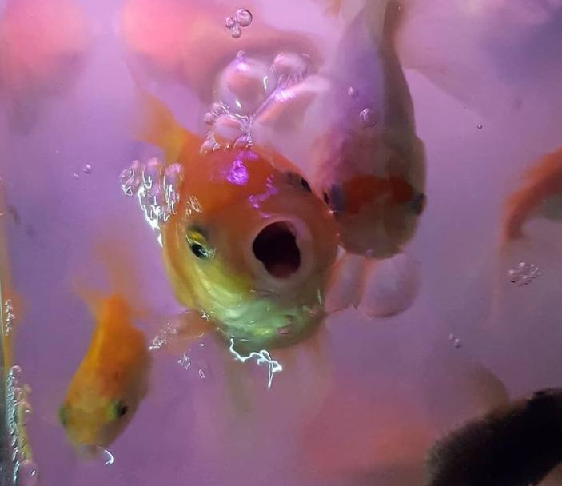

Ikan Koki
Goldfish atau mas koki merupakan ikan hias populer dan paling banyak diminati untuk dipajang dalam kolam kaca atau aquarium. Ikan dengan nama Latin Carassius auratus auratus ini hasil domestikasi dengan tampilan tubuh sirip ekor ganda dan berbentuk memampat bulat.
Kepala Balai Besar Pengujian Penerapan Produk Kelautan dan Perikanan (BBP3KP), Widya Rusyanto mengungkapkan ikan ini memiliki corak warna terang dan memiliki bentuk unik serta cantik, sehingga mampu membuat orang betah berlama-lama memandangnya.
Merujuk hasil penelitian Environment and Behavior yang dikutip dari Nyoman Suarna, melihat ikan berenang di akuarium atau kolam selama sepuluh menit dapat menurunkan tekanan darah dan denyut jantung. Selain itu, manfaat lain melihat ikan berenang di akuarium bisa mengurangi stres akibat terlalu lama berada dalam rumah untuk menerapkan social ataupun physical distancing.
Apa Makanan Ikan Koki?
Makanan Ikan Koki adalah Pelet Ikan.
Ini adalah pelajaranku pada sesi-1 Web Development